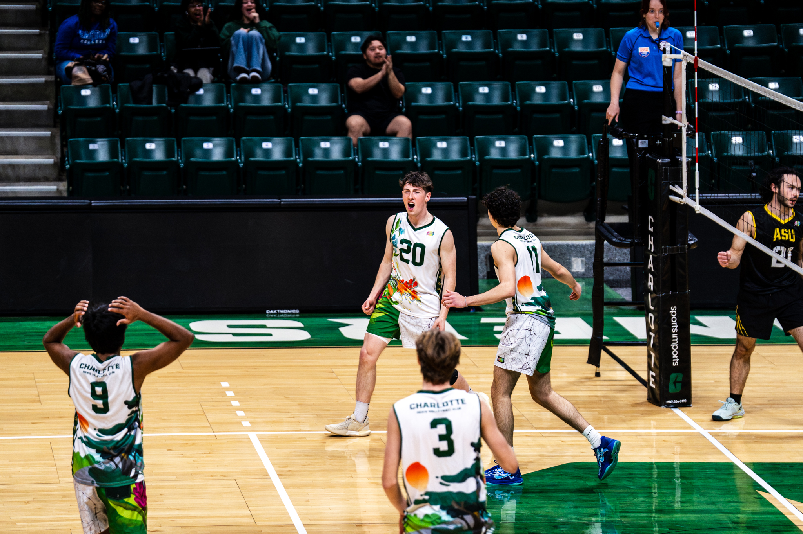
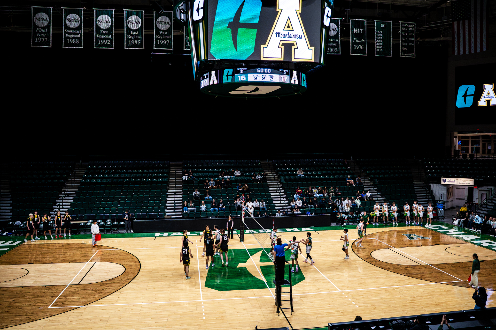
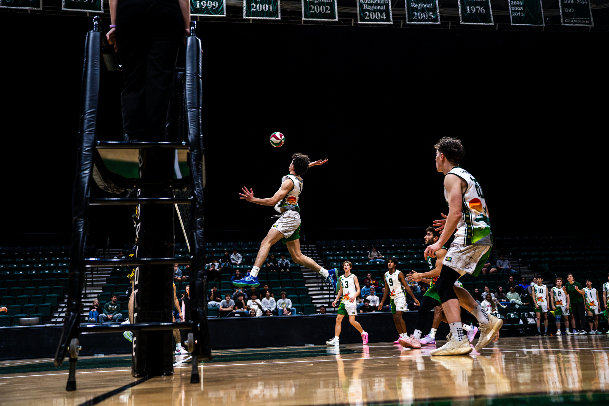
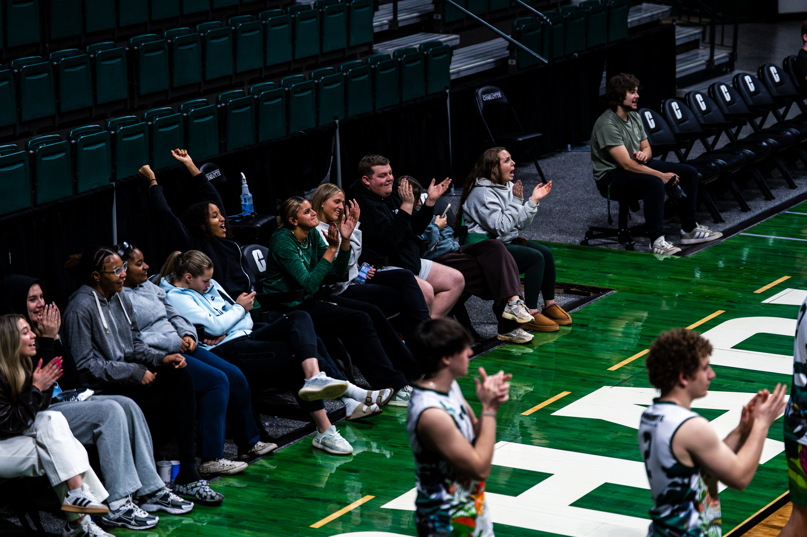

Event Management
Halton Arena — First Men's Volleyball Club Match on Campus

Every time we walked to practice, we passed center court. We never played on it, but I always thought about what it would be like if we did. That idea sat with me from freshman year through junior year without ever really going anywhere. There was always something in the way, whether it was timing, bandwidth, or just not having the right connection to make it happen.
Senior year changed that.
It was a random IT work order that finally opened the door. I was sent to pick up a box of surplus phones from the Halton Arena building manager's office, and while I was there I figured I had nothing to lose. I pitched the idea on the spot — told him I was on the men's volleyball club team, that we had always wanted to play on center court, and asked what it would take. He didn't shut it down. He laid out exactly what would be required and made sure I understood this wasn't something you just show up and do. Scheduling conflicts with basketball and women's volleyball, facility compliance, logistics — there was real work involved. I got his email and went home that night and started putting something together.
.jpg)

The proposal I sent him covered everything. I committed to bringing in App State as the opposing team, hiring certified referees, handling all the graphics and marketing myself, and managing the event from start to finish. He was on board. After that it was just a matter of finding an open date on the arena calendar, which meant months of follow-up emails through September, October, and November with no confirmed window yet.
Then on February 3rd, the email came in. We had February 12th. Nine days.
.jpg)
What made those nine days interesting is that life didn't stop because I had an event to pull off. I was still going into work every day, sitting through classes, and showing up to practice every evening. Everything I did for this event was happening in the margins — early mornings, lunch breaks, late nights. I was the only senior officer on the team, and the rest of my officers were all newer members who hadn't done anything like this before. I wanted to show them how it was done, so I decided to take point on every piece of it rather than distribute work I wasn't sure would get done.
I built out a central planning document with every contact, every task, and every deadline mapped out. I put together a media timeline so that promotional content was going out consistently each day in the lead-up to the event. I reached out to a photographer, a videographer, and a graphic designer and gave each of them a clear picture of what I was going for. I created the playlist, coordinated with the referees on attire and arrival time, and made sure players had parking information and spectators knew exactly where to enter and exit the facility. Inside a Division I arena, compliance isn't optional, and I wanted every single person walking through the doors that night to know what they were doing and where they were going.


Keeping everyone aligned was genuinely the hardest part. It's one thing to plan an event. It's another thing to make sure the players, the staff, the referees, and the spectators are all on the same page at the same time inside a building that isn't yours. That piece required constant communication and follow-through all the way up until tip-off.
We won in five sets against App State. After years of walking past that court and wondering, we finally played on it — and we played well. The whole thing came together exactly the way I had drawn it up, and that part meant just as much to me as the result on the court.